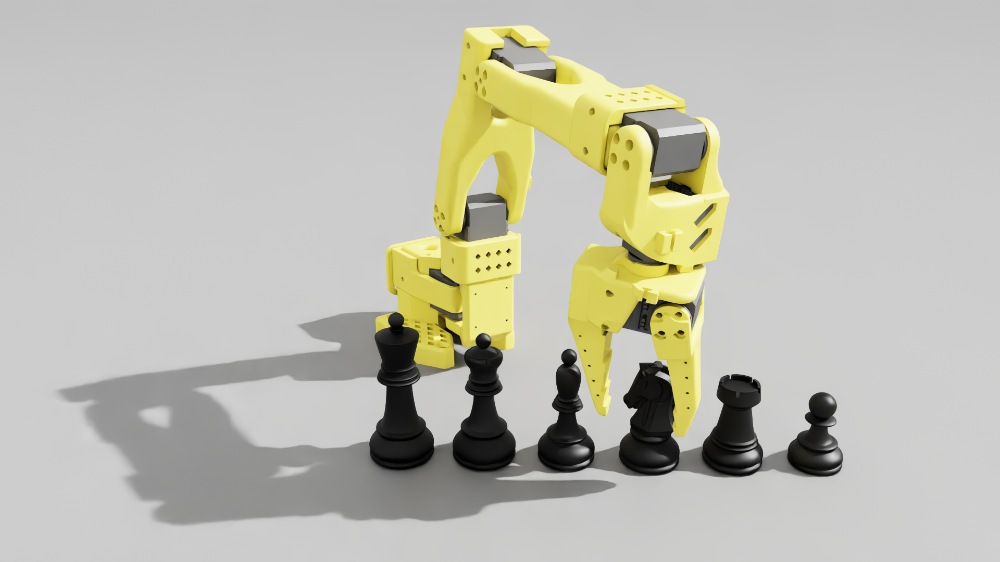
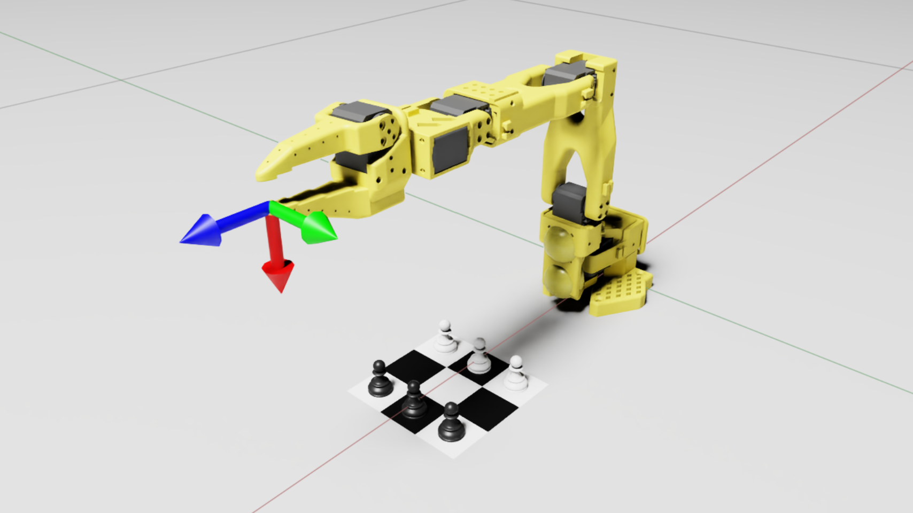
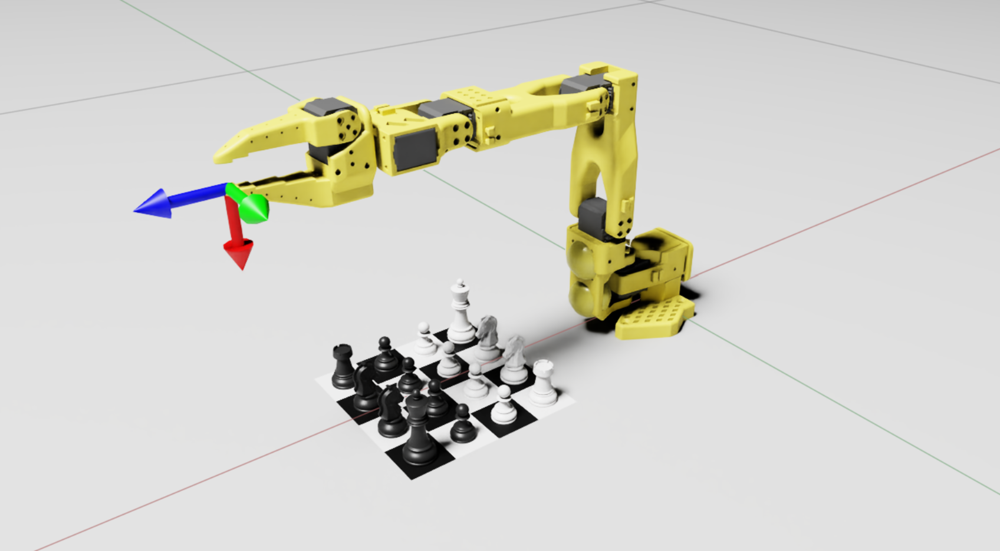
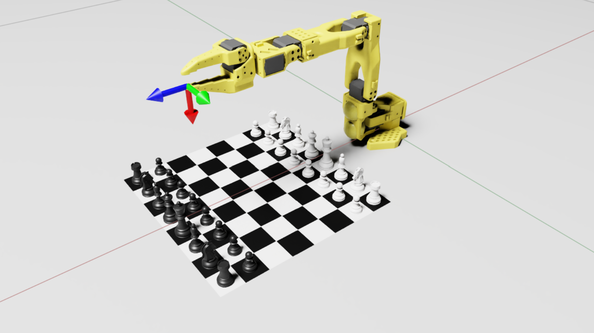

1
Robot plays chess
Perceive the board, choose a legal move, and move chess pieces with a robot arm.
Track 3 · CoRL 2026 Challenge Suite
Build a robot that plays chess. Train with simulation and real data, then demonstrate the policy in simulation and on a physical robot.

Start here
A complete RoboChess entry covers all four parts of the workflow.
Perceive the board, choose a legal move, and move chess pieces with a robot arm.
Use both simulated and real robot data to train your policy.
Evaluate the policy in simulation and on physical robot hardware.
Make your submission through the CoRL 2026 workshop OpenReview page ↗.
The challenge
RoboChess uses chess to study robot policy learning across simulation and physical deployment. A successful system must connect board perception and move selection with accurate piece manipulation.
The task tests whether a policy trained with simulated and real data can handle the precision of chess moves and transfer from virtual scenes to a real robot.
How to participate
Use the RoboChess project as a starting point, then document your approach and results for both evaluation settings.
The RoboChess codebase ↗ provides chess assets and simulation task examples. Its README and setup guide describe the current environment.
Train with simulation and real robot data. Test your resulting policy in simulation and on a real robot, recording successes and failures.
Submit your work to the CoRL 2026 workshop on OpenReview ↗.
In the codebase
The project includes compact boards for manipulation development and a standard 8 × 8 setup. The scenes below come from its simulation assets.



Resources
The repository documents an Isaac Sim manipulation extension, Isaac Lab task examples, and a Newton simulation port.
Read the README for supported scenes and robots, then use the setup notes to get the simulation running.
View repository ↗Review the CoRL 2026 workshop page and use its OpenReview console to make a submission.
Workshop home ↗The RoboChess project is under active development. Check its README for the latest setup and task details.
Your next move
Bring your chess-playing robot, training with sim and real data, and test results from simulation and a physical robot to the workshop submission page.